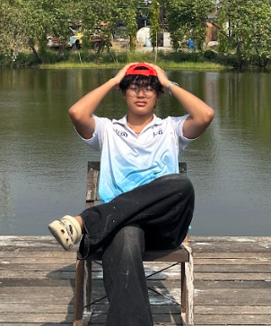

SPRITE
3D Artist • Graphic Designer • Filmmaker
📧 Mark303xX@gmail.com
📱 080-032-6853
📍 Bangkok, Thailand
I'm Siribhumi Asavajinda, currently pursuing a Vocational Certificate (ปวช.) Year 3 in Media and Computer Art: MAC at Don Bosco Technology College. This institution has been the birthplace of my passion, igniting my ambition to pursue higher education in Architecture and Design at university level.
When I started my educational journey, I questioned myself about what could truly support my future career. The answer revealed itself through media production and photography. Creating tangible work made me feel excited and happy, inspiring me to study, research, and delve deep into details with a focused approach.
3.02
5 Semesters
Computer
Graphics
October 22
2006
Creating unique brand identities and visual marks
Professional photo and video production
Creating detailed 3D models and animations
Comprehensive media content creation
Professional video post-production
Expert in 3D modeling and animation software
Present
Vocational Certificate (ปวช.)
Major: Media And Computer Art
Secondary School
Grade 7-9
Primary School
Grade 3-6
Primary School
Grade 1-2
Season 3 - International Level
5-minute short film competition on the theme "What kind of world do young people dream of seeing?"
Represented school competing against 1,000+ teams worldwide
2nd Place
10-kilometer marathon competition in the male under-18 category
College Academic Event
Game commentary for esports competition at college academic fair
3-minute Video + ADS
Produced promotional media for Media And Computer Art department